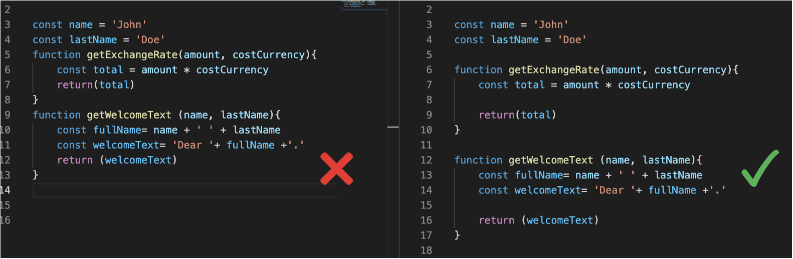
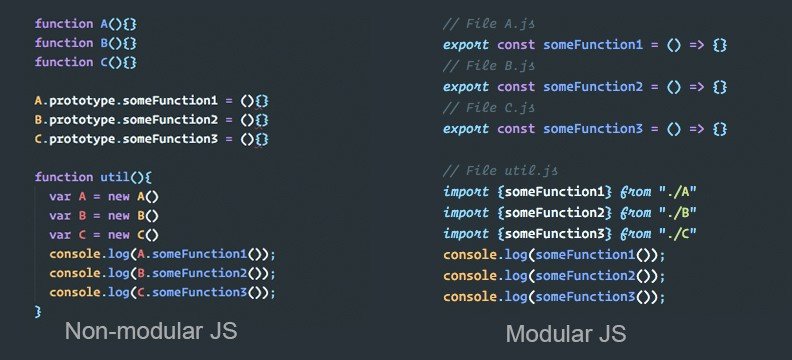

Clean Code
ㅤ ㅤ Clean Code, ou "Código Limpo", é um conceito introduzido por Robert C. Martin (também conhecido como Uncle Bob). Refere-se a práticas e princípios de programação que resultam em código que é legível, compreensível e fácil de manter. A ideia é escrever código que outros (ou você mesmo, no futuro) possam entender rapidamente.
ㅤComo funciona
Nomes Significativos:
Use nomes claros e descritivos para variáveis, funções e classes. Isso ajuda a entender o propósito do código sem precisar de muitos comentários. ㅤFunções Pequenas:
Funções devem ser curtas e realizar apenas uma tarefa. Isso facilita a leitura e a reutilização. ㅤEvitar Código Duplicado:
Sempre que possível, reutilize código para evitar redundâncias. Isso facilita a manutenção, já que mudanças só precisam ser feitas em um lugar. ㅤComentários Úteis:
Comentários devem explicar "por que" algo foi feito, não "o que" foi feito. O código deve ser claro o suficiente para que o "o que" seja evidente. ㅤTratamento de Erros:
Trate erros de maneira consistente e clara, evitando o uso de códigos de erro obscuros. ㅤEle é importante?
 ㅤㅤO Clean Code é essencial porque melhora a legibilidade e a manutenção do código, facilitando o trabalho em equipe e reduzindo o risco de erros. Sua estrutura clara permite a implementação eficiente de testes, aumentando a confiabilidade do software. Ao adotar essas práticas, as equipes conseguem entregar produtos de maior qualidade e com menos retrabalho.
ㅤ ㅤ ㅤ ㅤModulação
ㅤ Modulação é uma abordagem de design que divide um sistema em partes menores e mais gerenciáveis, conhecidas como módulos. Cada módulo tem uma responsabilidade específica, o que facilita o desenvolvimento, teste e manutenção.
ㅤComo funciona:
Separação de Responsabilidades:
Cada módulo deve ter uma única responsabilidade, seguindo o princípio da responsabilidade única (SRP). Isso melhora a clareza e a manutenção. ㅤInterfaces Claras:
Os módulos devem se comunicar por meio de interfaces bem definidas. Isso ajuda a garantir que mudanças em um módulo não afetem outros de maneira inesperada. ㅤEncapsulamento:
Módulos devem esconder sua implementação interna. Isso reduz o acoplamento entre diferentes partes do sistema, facilitando alterações. ㅤReutilização:
Módulos bem projetados podem ser reutilizados em diferentes partes do sistema ou até em outros projetos. ㅤTestabilidade:
Com módulos independentes, é mais fácil testar partes do código de forma isolada, o que aumenta a confiabilidade do sistema. ㅤEle é importante?
 ㅤㅤA modulação na programação é crucial porque permite dividir um sistema complexo em partes menores e gerenciáveis, facilitando a compreensão e a manutenção do código. Essa abordagem promove a reutilização de componentes, reduzindo a duplicação e melhorando a eficiência do desenvolvimento. Além disso, módulos bem definidos permitem testes mais fáceis e robustos, contribuindo para a qualidade do software.
ㅤConclusão
ㅤClean Code e modulação são fundamentais para criar software de alta qualidade. Juntos, eles promovem um código que é fácil de entender, manter e escalar. Adotar esses princípios não apenas melhora a qualidade do código, mas também a produtividade da equipe de desenvolvimento.